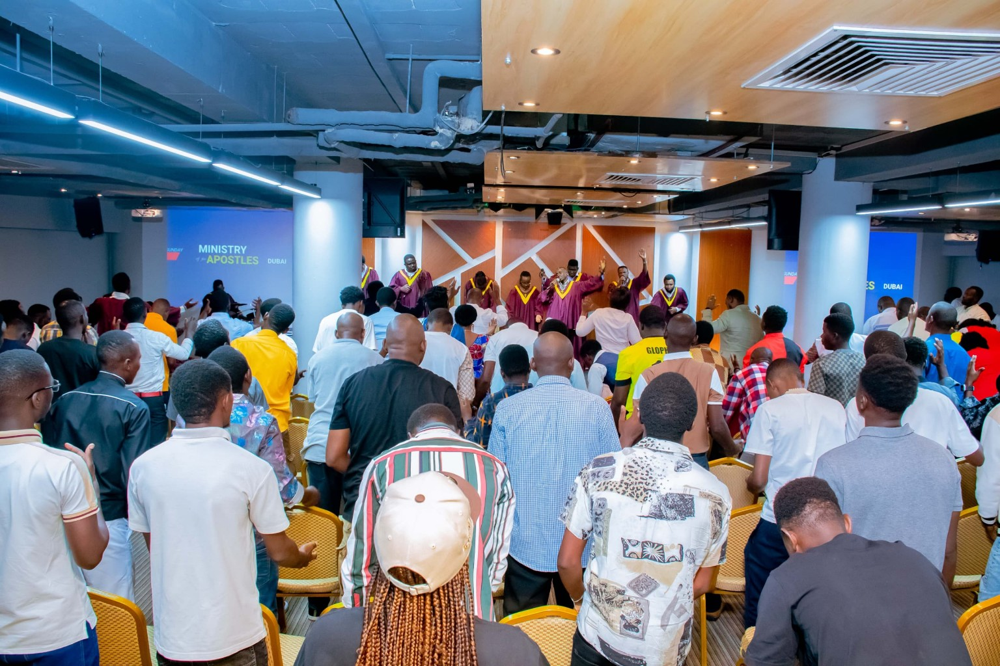
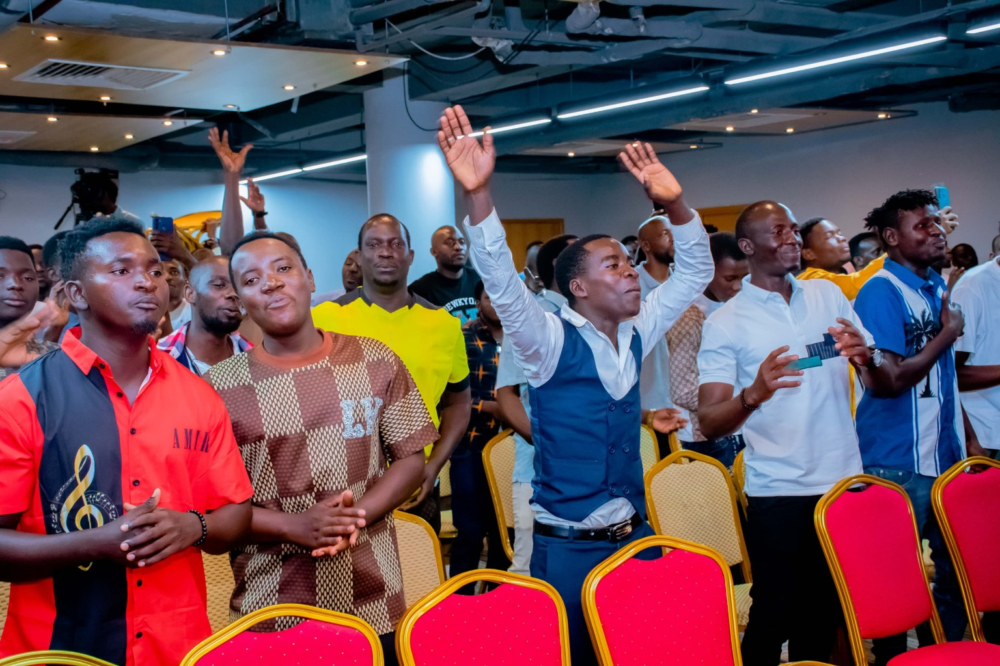

SundaySunday Service
8:00 PM — 11:00 PM
Evening gathering
APOSTLES CHURCH OF CHRIST · DUBAI
Faith. Fellowship. Hope.

APOSTLES CHURCH OF CHRIST · DUBAI
A place to belong. A faith to live.
We’re a church for the nations, centred on Jesus.
THERE’S A PLACE FOR YOU HERE
Every week · Dubai time (GST / UTC+4)
8:00 PM — 11:00 PM
Evening gathering
8:00 PM — 11:00 PM
Evening gathering
3:00 AM — 6:00 AM
Early morning gathering

WELCOME TO OUR CHURCH
Many stories. One hope. A community growing together in Christ.
Honouring Jesus together.
Growing through God’s Word.
A place to belong.
Sharing hope and His love.
Our mission is to preach the Gospel of Jesus to the nations and to heal the broken-hearted. Through biblical teaching, worship and prayer, we share messages that strengthen faith and inspire lives.
OUR VISION
Luke 1:17
Turn back the hearts of the fathers to the children, and the disobedient and incredulous and unpersuadable to the wisdom of the upright [which is the knowledge and holy love of the will of God]—in order to make ready for the Lord a people [perfectly] prepared [in spirit, adjusted and disposed and placed in the right moral state].
Turn back the hearts of the fathers to the children, and the disobedient and incredulous and unpersuadable to the wisdom of the upright [which is the knowledge and holy love of the will of God]—in order to make ready for the Lord a people [perfectly] prepared [in spirit, adjusted and disposed and placed in the right moral state].
A MOMENT IN THE WORD
Take a moment to pause and reflect on God’s Word.
Verse of the day
WORSHIP & THE WORD
A moment of worship from our official YouTube channel.
GROW IN THE WORD
Sermon recordings will appear here as they are shared. Stay connected with our church’s official channel.
View sermons & recordingsLIFE IN OUR CHURCH
WE’D LOVE TO HEAR FROM YOU
Join a gathering, reach out for prayer, or support the church.
TAKE YOUR NEXT STEP
Join a gathering, reach out for prayer,
or discover how to support the church.
Share a prayer request and connect with our church community.
Let’s pray together 02 / GENEROSITYAsk the church how you can support its ministry and message.
Explore giving 03 / COMMUNITYGet to know the church and plan a visit to our gathering in Dubai.
Come visit us